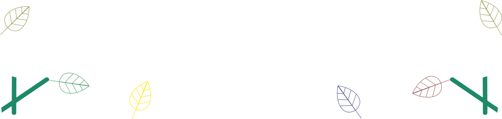

SEMAINE 37 : - définition des dates précises de randonnée
SEMAINE 38 : - création du tableau de budget prévisionnel pour la randonnée Seed Your Lungs
- élaboration des bannières de réseaux sociaux
- création de toutes les pages de réseaux sociaux de “Seed Your Lungs par TREKK MMI” (Instagram, Facebook, Twitter, Youtube, Tiktok et LinkedIn)
- élaboration de la brochure de présentation du projet Seed Your Lungs
SEMAINE 39 : - contact de potentiels partenaires à partir de nos pages de réseaux sociaux
- création d’un QR code relié au site du projet Seed Your Lungs
SEMAINE 40 : - création du profil cible idéal du projet Seed Your Lungs
SEMAINE 41 : - mise à jour du cahier des charges du projet Seed Your Lungs
- élaboration de la charte graphique de l’agence TREKK MMI
- mise à jour de la charte graphique du projet Seed Your Lungs
- mise en ligne du site de l’agence TREKK MMI
- communication de la brochure de présentation du projet Seed Your Lungs à l’Association Kokopelli
SEMAINE 42 : - mise à jour du site de l’agence TREKK MMI
- rédaction du courriel type de demande de partenariat
SEMAINE 45 : - création de la première newsletter
- mise à joue du site agence
SEMAINE 49 : - création de la deuxième newsletter
- rédaction du dossier de recommandation
- enquête cible
SEMAINE 1 : - création de la troisième newsletter
